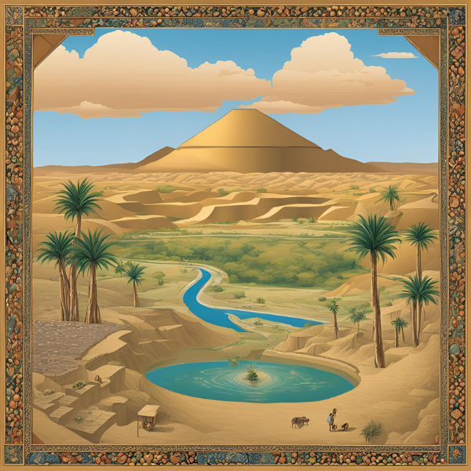

สภาพภูมิศาสตร์และที่ตั้งของอารยธรรมโรมัน
ปัจจัยที่ตั้งอารยธรรมโรมันกำเนิดบนคาบสมุทรอิตาลี
ซึ่งมีลักษณะเป็นแหลมยื่นลงไปในทะเลเมดิเตอร์เรเนียน มีภูเขาสำคัญ ได้แก่
เทือกเขาแอลป์ทางตอนเหนือและเทือกเขาแอเพนไนน์ที่เป็นแกนกลางของคาบสมุทร พื้นที่ราบมีน้อย
ทำให้การตั้งถิ่นฐานกระจัดกระจาย
สภาพภูมิอากาศ
มีภูมิอากาศแบบเมดิเตอร์เรเนียน อากาศอบอุ่นและเหมาะสมต่อการเพาะปลูก
แม่น้ำแม่น้ำสำคัญคือแม่น้ำไทเบอร์ ซึ่งเป็นแหล่งน้ำหล่อเลี้ยงเมืองโรมและช่วยให้การคมนาคมสะดวก
ชนเผ่า: ชนพื้นเมืองดั้งเดิมคือพวกอิตาลิส แบ่งเป็น 3 กลุ่มหลัก ได้แก่
พวกซาบีนส์ (Sabines)
พวกแซมไนท์ (Sammites)
พวกละติน (Latins) ซึ่งเป็นกลุ่มที่สร้างกรุงโรม